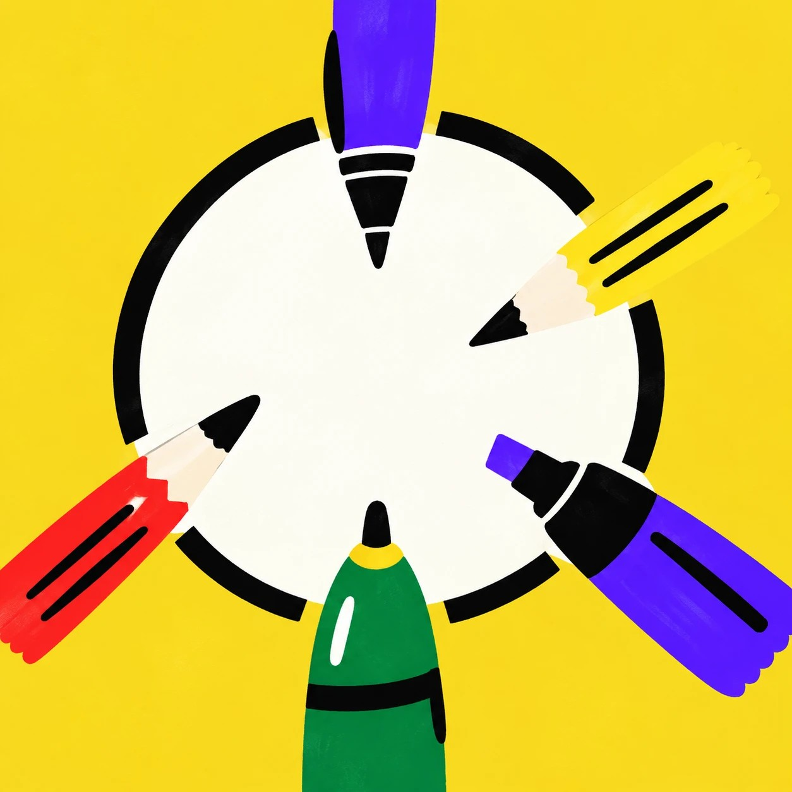
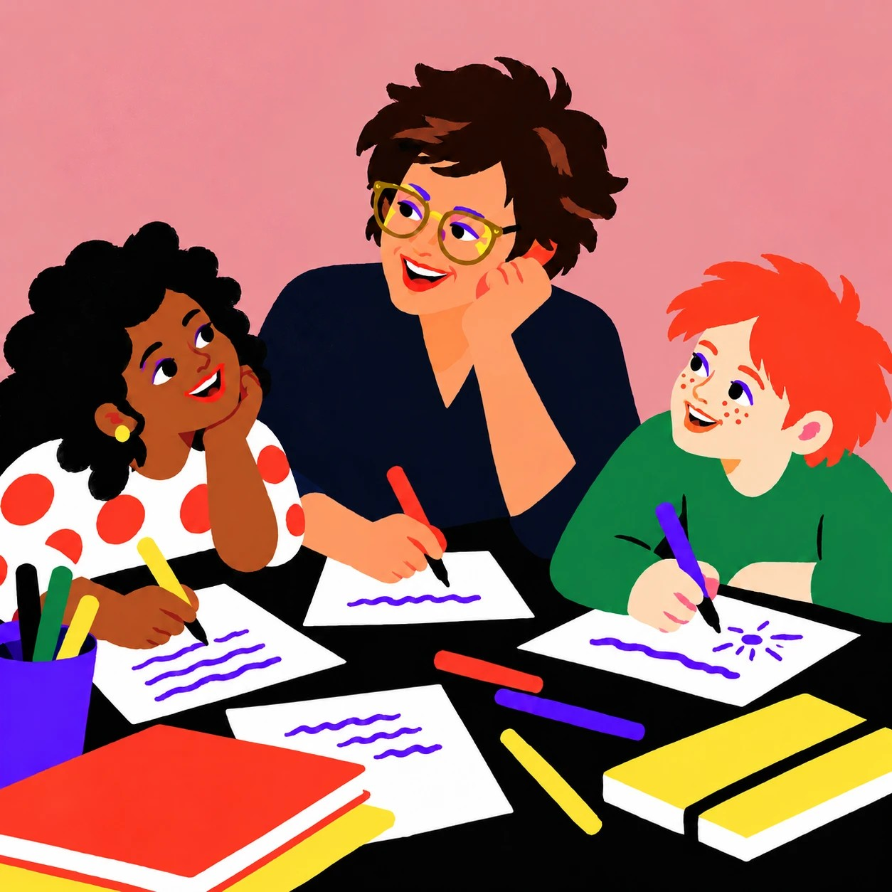

Binnenkort
Een informele borrel voor iedereen in Wageningen die schrijft of met schrijven bezig is: ontmoet andere (vak)schrijvers. → Meer info
Een creatieve werkplaats voor iedereen die andere mensen aan het schrijven wil zetten, dit keer rond het thema omdenken: van oeps naar nieuwe schrijfoefening. → Meer info

Nieuwe club in Wageningen waar kinderen hun eigen verhalen leren schrijven en tekenen, samen met Sonja (schrijven) en Carlijn van WentinkArt (tekenen). → Meer info & aanmelden
Leerlingen maakten hun eigen Kinderpagina in de Stad Wageningen: binnenkort te lezen. → Meer info